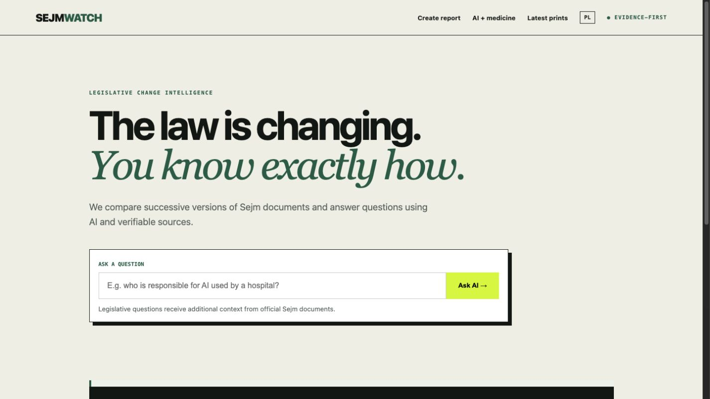
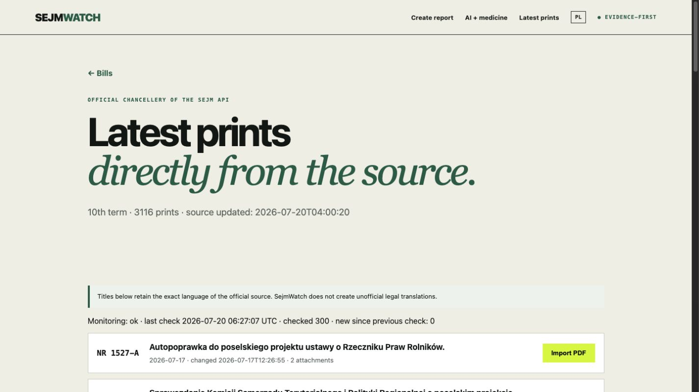
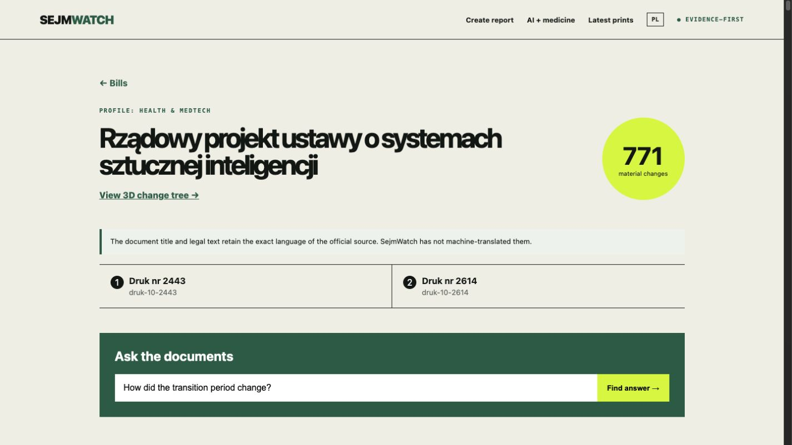
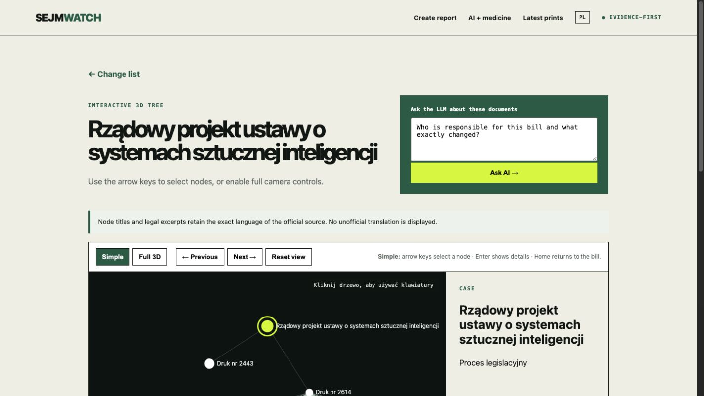
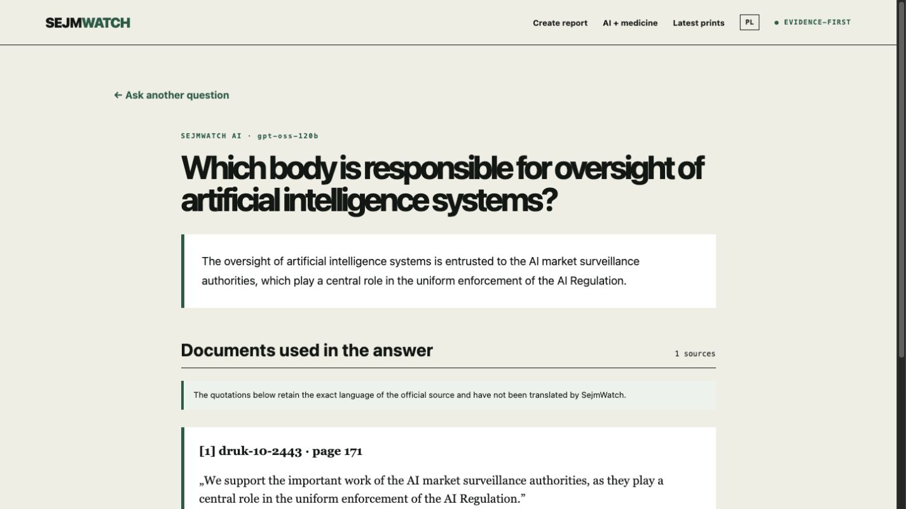
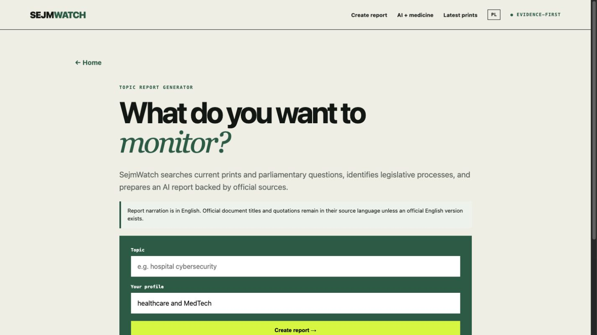

Evidence-first AI for tracking how Polish legislation changes—and what those changes mean.

SejmWatch connects every answer to verifiable evidence.

PDFs, metadata, page identity and monitoring.


Keyboard, mouse, responsibility and source links.


AI in medicine, cybersecurity, patient data and more.
Architecture · API integration · evidence validation · tests · accessibility · bilingual UI · deployment · live verification
Explore the live demo and inspect every source.